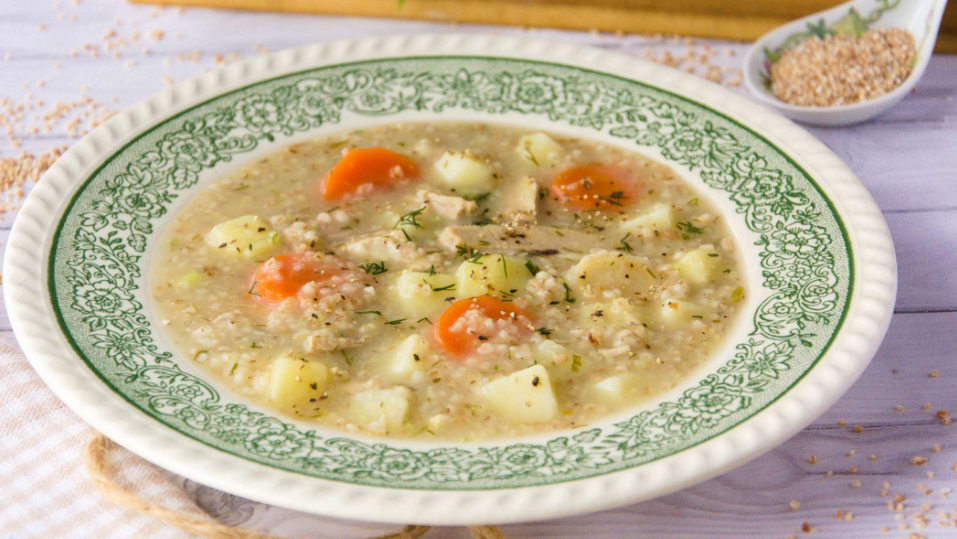

Polish krupnik soup

This traditional Polish soup is my favorite dish from my childhood. It's
warming, rich and comforting. The ingredients are easily accessible and
it's super easy to make. It is my go-to whenever I don't feel like coming
up with anything complex, but I want a filling, foolproof dish. This
version is vegetarian, but you can cook it with chicken thighs too.
Ingredients
- 3 spoons of butter or oil
- 2-3 onions
- 3 garlic cloves
- 1 celery root
- 1 big parsnip
- 3 carrots
- 2 cans of white beans
- 4-5 bay leaves
- 10 balls of allspice
- 500 g potatoes
- 150 - 200 g buckwheat
- a bunch of parsley or dill
- cream (rice or oat cream for vegan version)
Steps
-
Dice onions and garlic into small pieces and fry them in a big soup pot
until glassy.
-
In the meantime peel the celery root, parsnip and the carrots and grate
them on the grater with bigger holes. Put them in the pot with glassy
onion and fry together for 2 minutes.
-
Pour 3-4 liters of water to the pot. Add white beans, bay leaves and
allspice. Bring it to boil.
-
Peel the potatoes and cook them in a separate pot. I like cooking the
potatoes separately, so I don't overcook them in the soup, but if you
don't mind it, you can cook them together with the rest of the
ingredients.
-
When the soup is boiling, put the buckwheat in and boil together for 40
minutes. You can taste the broth, if you fell like it's too mild, you
can put 1-2 stock cubes for taste.
-
After 40 minutes turn off the heat. Add cut up parsley or dill and the
cream and mix until both spread evenly in the soup.
-
The soup should be very rich and thick. Serve it with the boiled
potatoes.